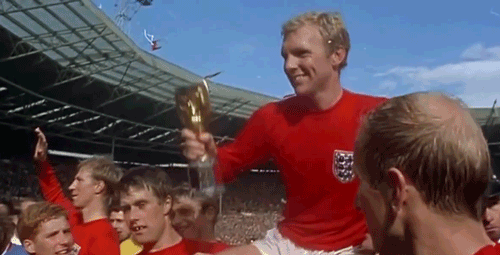

Inglaterra
Selección de Argentina: Historial Mundialista

- Campeones en casa (1966): Ganaron su único título mundial al vencer a Alemania Federal 4-2 en la final disputada en Wembley.
- Desempeño reciente: En Catar 2022, fueron eliminados en cuartos de final por Francia. Harry Kane fue la bota de oro en 2018.
- Rendimiento histórico: Inglaterra es el único equipo europeo que llegó a las semifinales en los dos grandes torneos internacionales entre 2018-2022.
- Historial vs Equipos: Han tenido dificultades históricas contra equipos europeos de primer nivel, pero suelen avanzar en fases de grupos.